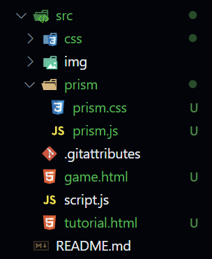

Flappy Bird is een simpel spel waarbij je een vogel bestuurt die door een reeks obstakels moet vliegen. In deze tutorial leer je hoe je dit spel maakt met HTML, CSS en JavaScript.
Voor het maken van deze game hebben we maar drie bestanden nodig, dit zijnde een HTML, JS en CSS bestand. Elk van deze bestanden heeft zijn eigen functie binnen dit spel. Om het overzichtelijk te houden zullen we wel verschillende mappen gebruiken om code gescheiden te houden van elkaar
De HTML is het skelet van de website en bevat de structuur van de game. In dit bestand maken we de game elementen aan zoals de vogel, de obstakels en de score.
<!DOCTYPE html>
<html lang="en" onclick="jump()">
<head>
<meta charset="UTF-8">
<title>Flappy Bird</title>
<link rel="stylesheet" href="style.css">
</head>
<body>
<aside class="sidebar">
<a href="game.hAtml">Flappy Bird</a>
<a href="tutorial.html">Tutorial</a>
</aside>
<div id="game" class="game">
<div id="block" class='block'></div>
<div id="hole" class='hole'></div>
<div id="character" class="character"></div>
</div>
</body>
<script src="script.js"></script>
</html>
Met JavaScript voegen we functionaliteit toe aan de game. In dit bestand schrijven we de code die de vogel laat springen, de obstakels laat bewegen en de score bijhoudt.
Als eerst zullen we enkele constanten moeten aanmaken die we nodig hebben voor het spel werkend te maken. Deze constanten zijn de vogel, de blokken en de gaten.
const character = document.getElementById('character');
const block = document.getElementById('block');
const hole = document.getElementById('hole');
Nadat we deze hebben opgehaald hebben we nog twee constanten nodig die zullen dienen als tellers voor de score en de hoogte van de vogel.
let counter = 0;
let jumping = 0;
als eerst zullen we een functie schrijven waarin we de opening tussen de buizen een willekeurige hoogte geven.
hole.addEventListener('animationiteration', () => {
let random = -((Math.random() * 300) + 150);
hole.style.top = random + 'px';
counter++;
});
hierna zulllen we een functie schrijven die enkele waarden zal ophalen die nodig zijn. Hiervoor gebruiken we een timer die elke 10 milliseconden zal worden uitgevoerd. Hiermee halen we om de 10 milliseconden de hoogte van de vogel op en de positie van de blokken.
setInterval(() => {
const characterTop = parseInt(
window.getComputedStyle(character).getPropertyValue("top")
);
if (jumping === 0) {
character.style.top = characterTop + 3 + "px";
}
const blockLeft = parseInt(
window.getComputedStyle(block).getPropertyValue("left")
);
const holeTop = parseInt(
window.getComputedStyle(hole).getPropertyValue("top")
);
const cTop = -(500 - characterTop);
if (
characterTop > 480 ||
(blockLeft < 20 &&
blockLeft > -50 &&
(cTop < holeTop || cTop > holeTop + 130))
) {
alert(`Game over. Score: ${counter - 1}`);
character.style.top = 100 + "px";
counter = 0;
}
}, 10);
als laatste zullen we een functie schrijven die de vogel laat springen. Deze functie zal worden aangeroepen wanneer er op het scherm wordt geklikt.
a
const jump = () => {
jumping = 1;
let jumpCount = 0;
const jumpInterval = setInterval(() => {
const characterTop = parseInt(
window.getComputedStyle(character).getPropertyValue("top")
);
if (characterTop > 6 && jumpCount < 15) {
character.style.top = characterTop - 5 + "px";
}
if (jumpCount > 20) {
clearInterval(jumpInterval);
jumping = 0;
jumpCount = 0;
}
jumpCount++;
}, 10);
};